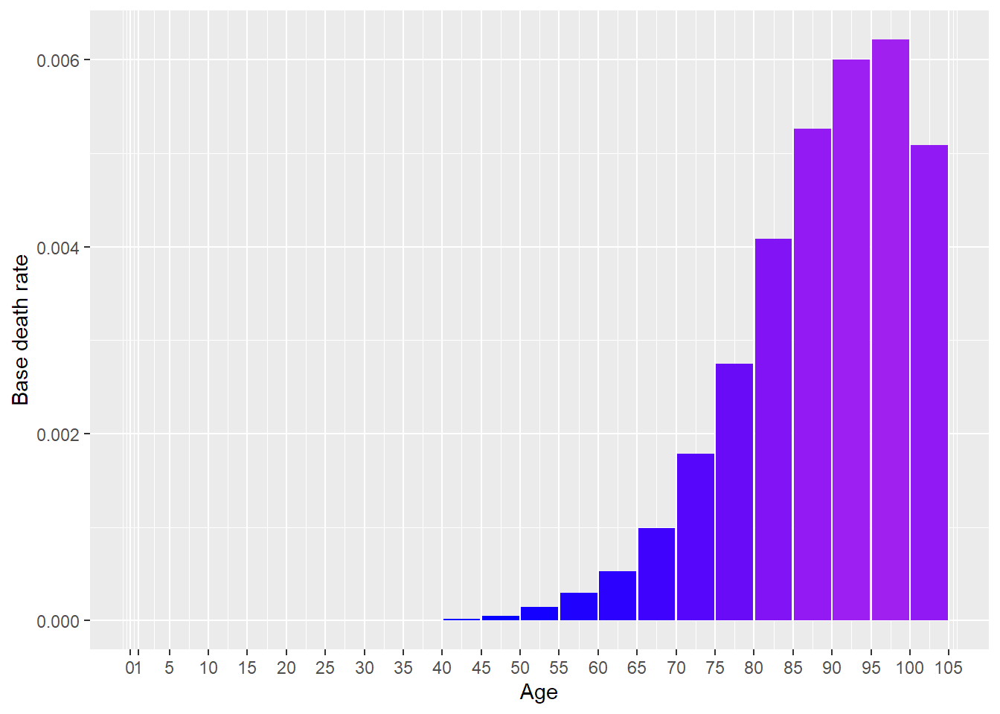
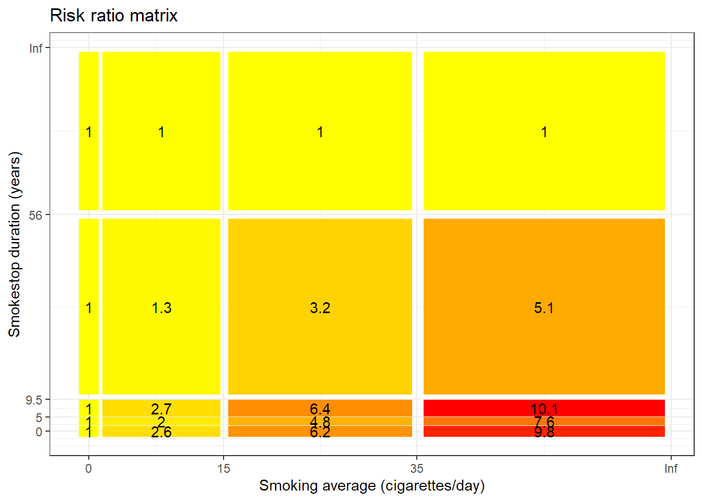
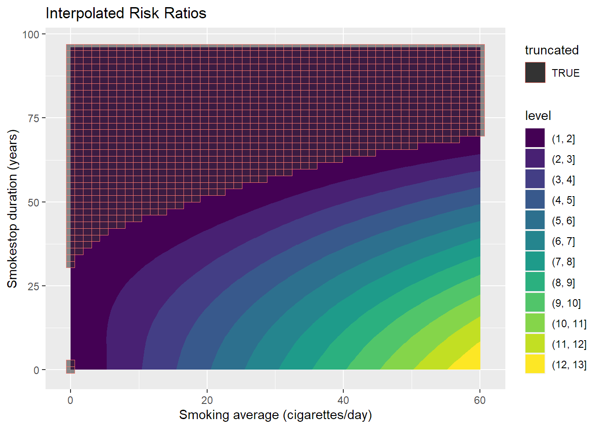

[auto-generated file]
Chronic obstructive pulmonary disease is a death cause. It means that there is a certain probability that one dies from this.
Chronic obstructive pulmonary disease is part of the following death cause categories
In the model Chronic obstructive pulmonary disease has the following risk factors
In 2014 Chronic obstructive pulmonary disease was responsible for 5.15% of the deaths in the US. Below is a plot of how prevalent the death was for different ages (Xu et al. 2016)

The definition of dying from Chronic obstructive pulmonary disease is to get any of the following ICD codes as the main cause of death on one’s death certificate. The percentage is the proportion of the deaths from Chronic obstructive pulmonary disease who falls under the ICD code
The combined risk ratio of all risk factors is computed using the formula
\[ RR=RR_{\text{Smoke avg.,Smoke end a.}} \]
The normalization factor is based on the joint distribution of all the risk factors and is computed using the formula
\[ P=P_{\text{Smoke avg.,Smoke end a.}} \]
Smoking average and Time since smoking per year are a group of risk factors for Chronic obstructive pulmonary disease.
Below is a plot of the risk ratios we have taken from the literature alterated to fit our model

Because the variables Smoking average and Time since smoking per year are numeric, we have computed a smoothed approximation. 
“ICD Order Files 2014.” n.d. https://www.cdc.gov/nchs/icd/icd10cm.htm.
Xu, Jiaquan, Kenneth D Kochanek, Sherry L Murphy, and Betzaida Tejada-Vera. 2016. “Deaths: Final Data for 2014.” National Vital Statistics Reports 65 (4).